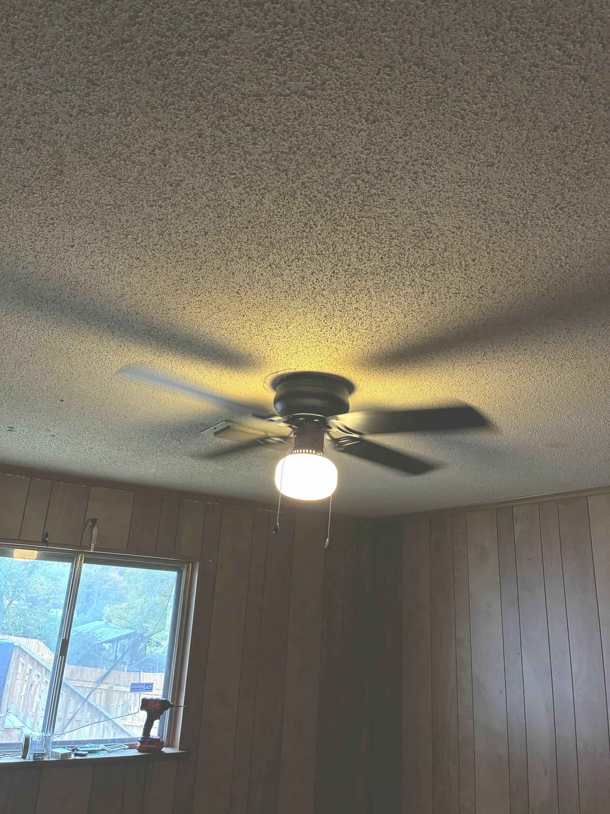

If you're working hard
and still broke...
and still broke...
$0
...this is for you.
I was you.
I was a cop.
The anxiety got
so bad I resigned.
so bad I resigned.
Then a banker.
Nice office.
Steady check.
Steady check.
It still wasn't me.
So I went back
to being a cop.
to being a cop.
Same stress.
Same paycheck.
Same paycheck.
So I bet
on myself.
on myself.
Day 1.
Zero customers.
Zero customers.
So I took every
small job.
small job.
Knocked on doors.
Posted every job.
Posted every job.
Said yes to every deck
and every kitchen.
and every kitchen.
Now I build
with my dad.
with my dad.
And I'm home
for my boys.
for my boys.
If you're struggling
right now...
right now...
you're allowed to
bet on yourself too.
bet on yourself too.
Follow.
I'll show you how.
I'll show you how.
And in under a month...